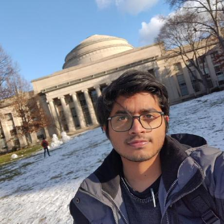
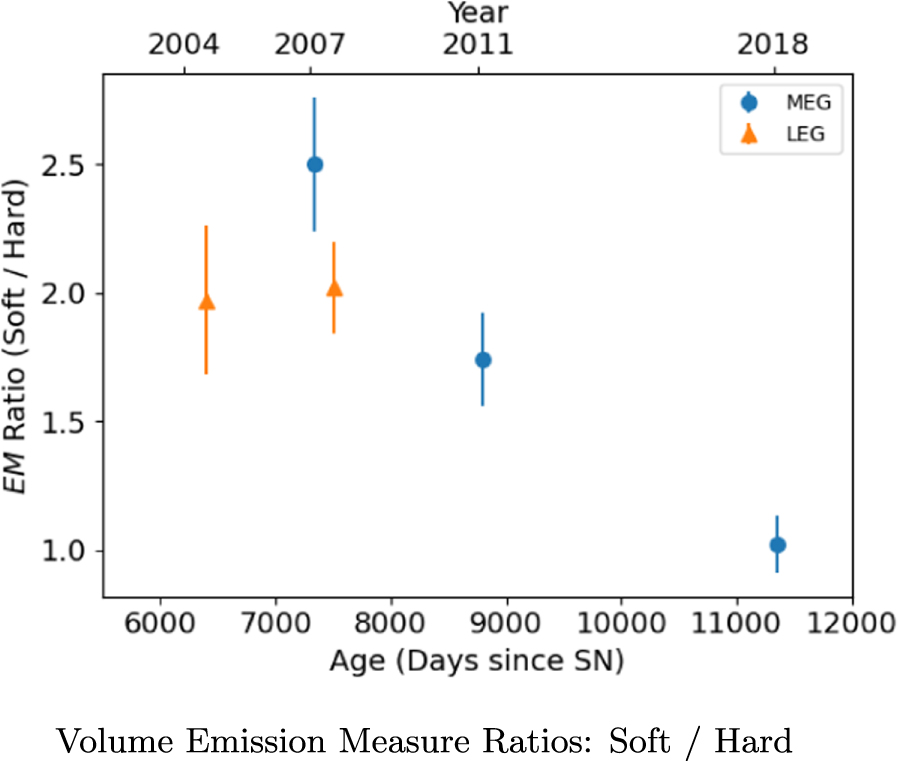
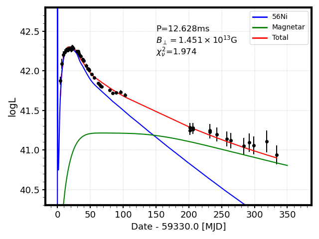

About Me

സ്വാഗതം, Welcome, स्वागत है, Bienvenidos! I am Aravind. I am an early-career Astronomer, interested in studying cataclysmic stellar explosions and what they tell us about how we got here! I am from Kerala, India - A lush green state, often dubbed, "God's Own Country." I grew up in the metropolis of Mumbai, India and came to the U.S. for my Ph.D research.
Outside of science, I love carnatic classical music, dabbling in some sketching / art, being outside, and a good cup of chai.
Like many a busy road, this site is under perennial construction!
Education:
Ph.D. in Physics | The University of Texas at Arlington (Expected June 2023)
BS-MS in Physics | Indian Institute of Science Education and Research, Kolkata (2012-17)
Research Interests:
Evolution of Supernovae and Supernova Remnants
Neutron Star Natal Kicks
Dust Formation in Core Collapse Supernovae
Time Domain Astrophysics
Publications:
You can find my publications here
Research
A new evolutionary phase of the X-ray remnant of SN 1987A
SN 1987A in the Large Magellanic Cloud is the closest observed (~50 kpc) supernova in the last 400 years, providing a unique opportunity for an unprecedented,
detailed study of a core-collapse supernova with regular monitoring across the entire electromagnetic spectrum. Chandra X-ray Observatory (Chandra) provides
an unrivaled opportunity of spatially-resolved spectroscopy in X-rays to directly study the formation and evolution of the remnant of SN 1987A. X-ray emission
from SN 1987A has been dominated by the SN forward shock interaction with the equatorial ring, which is the dense circumstellar material produced by interactions
of the stellar winds from the massive progenitor star during its late stages of stellar evolution before the SN explosion.
I have been the main workforce of the Chandra study of SN 1987A for the past five years as part of my Ph.D. thesis. I revealed that the evolution of the X-ray
remnant of SN 1987A has transitioned into a new stage, in which the SN blast wave has passed the ER and is now entering the low-density red supergiant wind beyond
the ER. Utilizing several deep (170 – 350 ks) high resolution Chandra grating spectra taken over 14 yr, I showed that, while the ratio of EM between soft (0.5 - 2.0 keV)
and hard (3.0 - 8.0 keV) component best-fit spectral models of X-ray emission had been constant between 2004 and 2011, in 2018, it has undergone a significant change (Figure below). Such a
“hardening” of the X-ray emission is evidence for increasing contributions from shocked gas having significantly lower densities than that of the ER.
You can read more about our work here

Evolution of SN 2021krf: Late-time Luminosity and Dust formation
Core-Collapse supernovae (CCSNe) such as Type Ib/c and II are believed to be powered by radioactive decay of 56Ni and its decay product 56Co. For a typical Type Ib/c SN,
the late-time luminosity is expected to follow the decay of 56Co. A slower decline would suggest the presence of additional power sources such as the
central engine and/or strong shock interaction with dense ambient circumstellar material. CCSNe are also interesting laboratories to identify dust formation as the ejecta expands. SN 2021krf
is a nearby Type Ic SN (z ~ 0.01 at the distance of 65 Mpc), detected by the Zwicky Transient Facility (ZTF) on 2021 April 30 (MJD 59334).
In the optical/IR photometric data of SN 2021krf, I found a slow decay of light curves in late-time epochs (days ~ 70 - 300), clearly indicating the presence of powering sources
in addition to the radioactive decay of Ni/Co (Figure below). I also noted a clear rising NIR continuum above 2 microns as early as day 68, suggesting the presence of warm dust.
In out work, I identified a central neutron star as the additional power source candidate causing the late-time luminosity in SN 2021krf. I also showed that the rising continuum
could be explained by early dust formation in SN ejecta. Both these results are extremely unusual for Type Ic SN, which provides a rare, but important sample for the study of the
nature of Type Ic SN and its dust formation. This work is currently under peer review and you can read more about our work here

Contact
Email: aravind.pazhayathravi@mavs.uta.edu
Address: Room SH 120E, UT Arlington